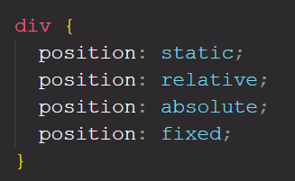
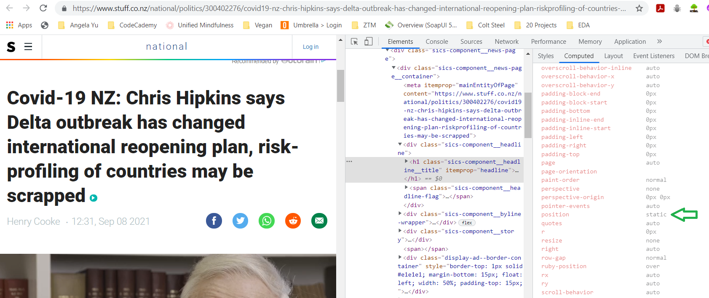
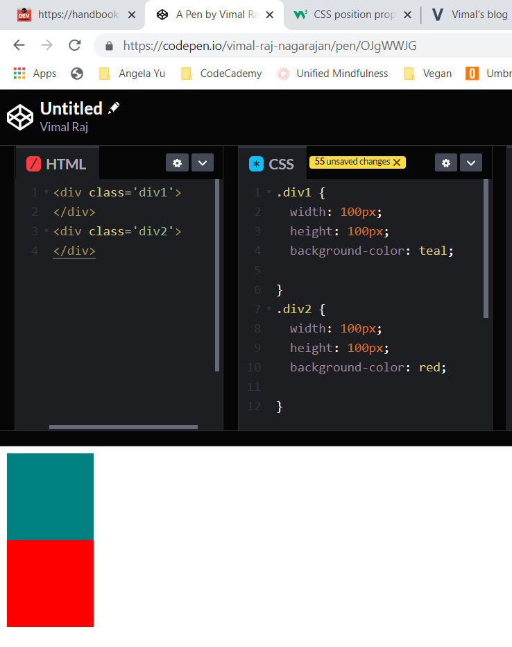
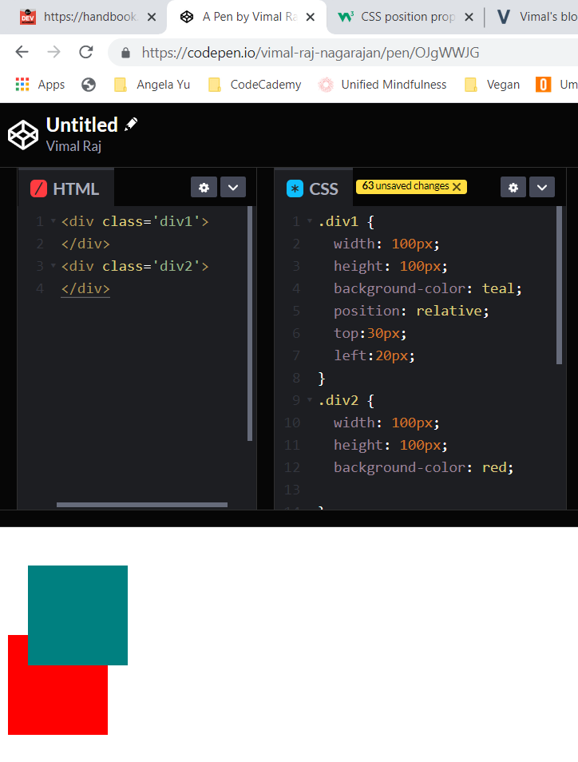
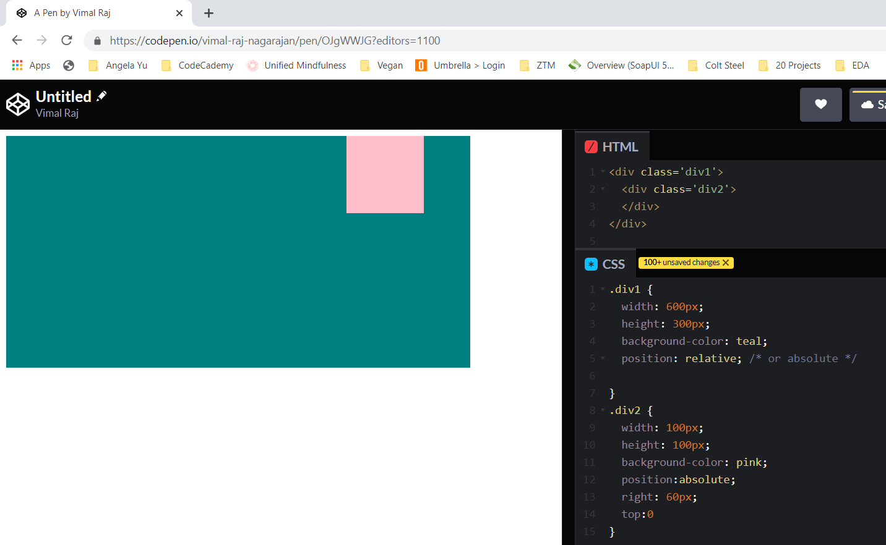
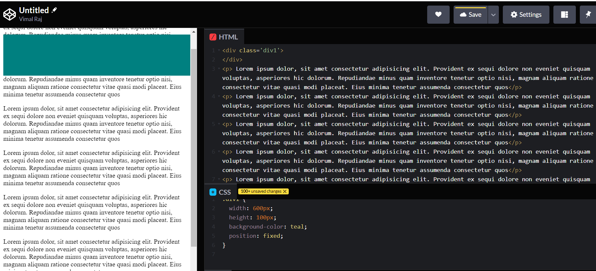

In a webpage, the position of an element being displayed is determined by two things: 1. the height and width of the element 2. the order of the element in the html document
The Position property in CSS makes it possible to position a property the way we want it to rather than the default layout of the document. This property can take either one of the 7 different values depending on the use case. We are goin to look at 4 of these 7 value in detail. These four are the most used (or needed) values that the 'Position' property can take.
As we know, the elements in html will have some default styles applied by the browser. The 'position' is one such property whic gets applied on all html elements. The default value the browser applies is static. Static positioning goes along with the html rules and keeps to the default html flow. Almost always, we wont be using this value in our development. This is something that gets applied default by the browser.
This allows us to position the element relative to how it would have been positioned. Just the 'position: relative' peoperty does not chnage the position of the element. It has to be combined with one or more of the attributes: top, left, bottom or right. In the below screen (left), when the positioning is static(default), the squares confirms to the flow of the html document. When the positioning is set to relative with the attribute values (right screen), the teal box has moved accordingly. It has been pushed 30px from the top toward bottom and 20px from the left toward the right. An easy to It is important to note that this does not affect any other elements in the html flow.
 The naming in this positioning is a bit tricky. The element with the absolute position will be placed relative to its parent element. Let us see an example. The pink box with a absolute positioning and attribute of '60px right', is pushed from the right of its parent element which is having a relative or absolute position
The fixed positioning allows the element to be fixed in its position. When the user scrolls through the web page, the element does not disapper and it is fixed in the same position. Notice in the below image the rectangular box is displayed when the page is scrolled.
